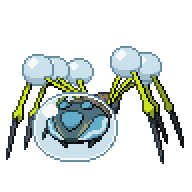
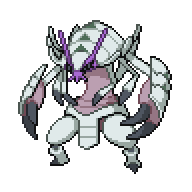
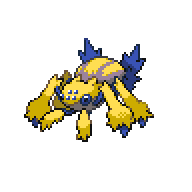
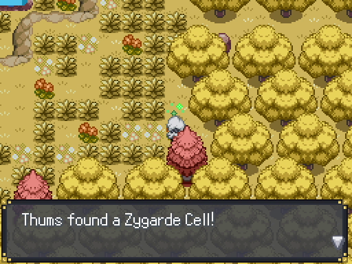
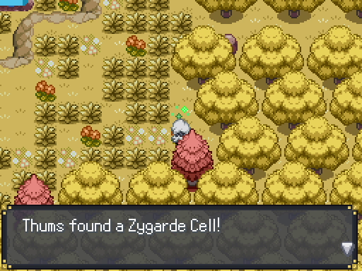
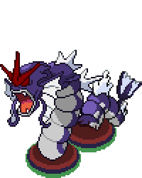

Side Activities
Goldenwood Forest - Revisted

Head on over all the way to the west exit of Wispy Path, and you'll find a group of people in a meeting. After some conversation, you can reveal that you know that the Dimensional Rift is still in Goldenwood Forest. C will recruit you to help out since you are experienced with the Rift, but not before testing you with a battle.
International Police C
|

Araquanid, Level 29 |
Bug | Bug Bite |
|---|---|---|
| Bite | ||
| Water | Bubble Beam | |
| Aqua Ring | ||
|

Golisopod, Level 28 |
Bug | First Impression |
| Leech Life | ||
| Water | Slash | |
| Razor Shell | ||
|

Galvantula, Level 31 |
Bug | Electro Ball |
| Bug Bite | ||
| Electric | Thunder Wave | |
| Sticky Web | ||
Reward:  2790 2790
|
||
This isn't a particularly difficult battle. A good Electric-type or Flying-type Pokemon can rip through his first two, and a good Rock-type Pokemon can deal with all three, though it does need to be careful of the Water-type moves. Either way, his Pokemon are pretty low leveled and its a 6v3, so you shouldn't have too much of an issue with this battle. Once you beat him, he'll let you into Goldenwood Forest. You can use the Healing Machine here as well as the PC to organize your party.
Goldenwood Forest has become overgrown during the time it was unaccessible. More hidden items are available here, but before we head down to the Dimensional Rift take a detour into Goldenwood Cave. Now that you have Rock Smash, you can access a Rare Candy and a Nugget. Exit to Goldenwood Grove, and a little southeast of the abandoned blanket is a secret pathway
 that leads to a Zygarde Cell. That's all there is to do here for now, so head back out to Goldenwood Forest.
that leads to a Zygarde Cell. That's all there is to do here for now, so head back out to Goldenwood Forest.
Here, take the path we took when Melia was with us to go fight Zetta. There's hidden items along the way, including a Gourmet Treat and a PP Up if you want those. Finally, where we fought Zetta, Gyarados will be waiting for us.

Dimensional Rift Gyarados
|

Gyarados, Level 45 |
Water | Rift Thrash |
|---|---|---|
| Fire Fang | ||
| Dimension | Ice Fang | |
| Thunder Fang |
At this point, the Gyarados isn't really much of a threat. You can use the same strategy you've been using for major fights, such as status or just out-lasting it since its a 6v1. You're also fighting in a Forest Field, so Grass-type moves are boosted to hit the Gyarados even harder since it loses its Flying-type. However you beat it, C will come and thank you for your contribution and then leave. Instead of heading back to Goldenleaf, we can complete Zumi's Quest if you've caught all the Pokemon she asked for.
Other Activities
If you've collected all of Zumi's requested Pokemon, she'll give you an Advanced Pokedex. This upgrade allows you to see the learnable moves of each Pokemon, so it could be handy if you don't have access to internet while playing the game. In case you've forgotten where to find each Pokemon, here's the complete list:- Dedenne - Grass in Route 2 during the mornings and daytime
- Carbink - Amethyst Cave random encounters
- Ledyba - Grass in Sheridan Village and Sheridan Arena during the mornings and daytime
- Skrelp - Fish in Gearen Sewers using a Good Rod. You'll be able to get a Good Rod while doing the The Hidden Library 2 Help Plaza Quest above.
- Zangoose - Route 3 and Mirage Woods at any time of the day
- Drifloon - Grass in Goldenleaf Town and Forgotten Path at night
- Route 2 - Posing as Kecleon
- Route 3 - Inside the RV near the market
- Goldenleaf Town - In the graveyard in the west part of the town
 in Goldenleaf Town. These breeders will occasioanlly appear while your travelling, and they all fight using three Audinos which gives a large amount of experience points. With the Exp. All and a hard level cap, its a good idea to just level up all your Pokemon so that you can quickly have access to them if need be.
in Goldenleaf Town. These breeders will occasioanlly appear while your travelling, and they all fight using three Audinos which gives a large amount of experience points. With the Exp. All and a hard level cap, its a good idea to just level up all your Pokemon so that you can quickly have access to them if need be.
With everything done, all that's left to do is challenge the gym.